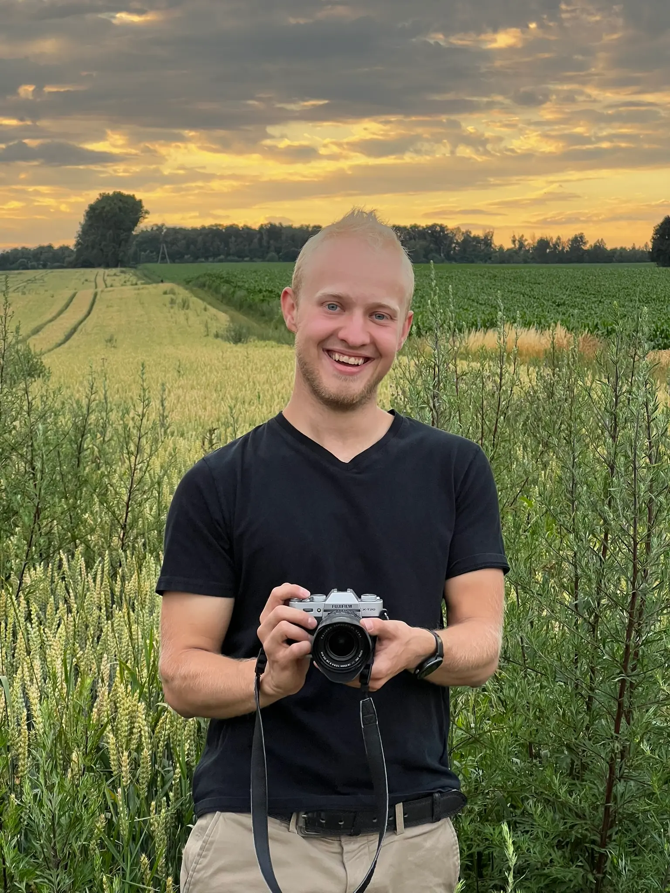

Analogowy klimat, cyfrowa jakość
Przewiń w dół ↓Nie lubię sztywnych sesji, gdzie wszyscy udają, że się dobrze bawią. Wolę złapać to, co się naprawdę dzieje — w swoim analogowym stylu. Portrety, reportaże, sesje plenerowe — nieważne co planujesz, dogadamy szczegóły, a ja zajmę się resztą. Bez presji, bez sztucznych uśmiechów, za to z ziarnem i charakterem.

200 zł
Zgoda na publikację zdjęć w portfolio / social media — rabat 10%
Umów terminWybierz dogodny termin — potwierdzenie dostaniesz od razu na maila.